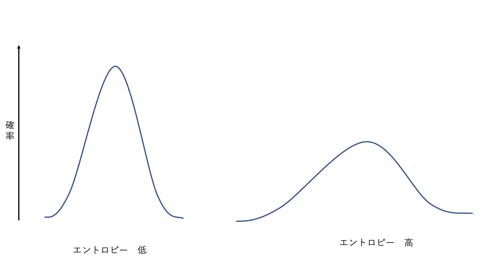

情報理論(エントロピーから相互情報量, PRML1.6)
情報量の表し方
情報量を測る尺度は確率分布$p(x)$に依存しており，確率$p(x)$の単調な関数$h(x)$で表されるものを考える． 情報量として用いる場合，以下の2点を満たしている必要がある．
- $h(x,y)=h(x)+h(y)$ 2つの事象$x,y$が無関係なら，両方を観測したときの情報が，それぞれを別々に観測した情報の和となる．
- $p(x,y)=p(x)p(y)$ 2つの無関係な事象は統計的に独立である．
この2つの関係から，対数を用いる．$p(x)$は1以下となるためマイナス記号を加え情報が0以上であることを保証する．
$$ h(x)=-log_2p(x) $$ 情報理論では一般的に底2が用いられる．
エントロピー
ある送信者が確率変数を受信者に送りたいと考えた時，送られる情報の平均量は，分布$p(x)$の期待値を撮ったものとなり，これを確率変数$x$のエントロピーと呼ぶ．
$$ H[x]=-\sum_x p(x) \log_{2}p(x) $$
ビット数の下限
ある確率変数$x$が8個の{$a,b,c,d,e,f,g,h$}を送信する場合を考える．
- 8個それぞれの確率が等確率であるとする．
$$ H[x]= -8*\frac{1}{8}\log_{2}\frac{1}{8}=3ビット $$
- 8個それぞれの確率が{$\frac{1}{2},\frac{1}{4},\frac{1}{8},\frac{1}{16},\frac{1}{64},\frac{1}{64},\frac{1}{64},\frac{1}{64},$}で与えられるとする．
$$ H[x]=-\frac{1}{2}\log_2\frac{1}{2}-\frac{1}{4}\log_2\frac{1}{4}-\frac{1}{8}\log_2\frac{1}{8}-\frac{1}{16}\log_2\frac{1}{16}-\frac{4}{64}\log_2\frac{1}{64}=2ビット $$
上記の例2のように非一様な場合は，よく起きる事象に短い符号を使い，あまり起きない事象に長い符号を割り当てることにより効率よく通信を行うことができる． ノイズなし符号化定理では，確率変数の状態を送るために必要なビット数の下限がエントロピーであることを主張している．
エントロピーの高低
 少ない値で鋭いピークを持つようば分布でエントロピーは低く，薄く広がってる分布はエントロピーが高い．
最大のエントロピーを持つ確率分布
まず，エントロピーの二階微分二階微分を計算する．
$$ \frac{\delta H[x]}{\delta p(x_i)\delta p(x_j)}=-I_{ij}\frac{1}{p_i} $$ $I$は単位行列である．二階微分が負であるため上に凸なグラフとなり．停留点が最大値であることがわかる．
微分エントロピー
$x$を等間隔の区間$\Delta$にわけることを考えると，平均値の定理より，以下の式を満たす$x_i$が存在する．
$$ \int_{i\Delta}^{(i+1)\Delta}p(x)dx = p(x_i)\Delta $$ $x_i$の値を観測する確率は，$p(x_i)\Delta$となる．よって離散分布のエントロピーは，以下のようになる．
$$ H_{\Delta}=-\sum_ip(x_i)\Delta\ln(p(x_i)\Delta)= -\sum_i p(x_i)\Delta\ln p(x_i)- \ln \Delta $$ 第二項を無視して$\Delta\rightarrow 0$の極限を考える．
$$ \lim_{\Delta\rightarrow 0}{ -\sum_i p(x_i)\Delta\ln p(x_i) } = -\int p(x)\ln p(x)dx $$ 右辺が微分エントロピーとなる．
微分エントロピーの最大化
微分エントロピーは
$$ H[x]= - \int p(x)\ln p(x)dx $$ で与えられる． 微分エントロピーを以下の3つの制約のもとで最大化する．
- $\int_{-\infty}^{\infty}p(x)dx = 1$
- $\int_{-\infty}^{\infty}xp(x)dx = \mu$
- $\int_{-\infty}^{\infty}(x-\mu)^2p(x)dx = \sigma^2$
ラグランジュの未定乗数法を用いて解くと最終的に以下の結果となる．(計算省略)
$$ p(x)=\frac{1}{2\pi\sigma^2}\exp{-\frac{(x-\mu)^2}{2\sigma^2}} $$ つまり，微分エントロピーを最大にする分布はガウス分布となる． ガウス分布の微分エントロピーを計算すると，以下のようになる．
$$ H[x]=\frac{1}{2}{1 + \ln(2\pi\sigma^2)} $$ エントロピーは分散$\sigma^2$が増えるごとに大きくなることがわかる．
同時分布のエントロピー
同時分布$p(x,y)$を考える．$x$の値が既知であるとすれば，対応する$y$の値を特定するのに付加的な情報は，$p(y|x)$である．よって，$y$を特定するための付加的な情報量の平均は，以下のようにかける．
$$ H[y|x]=-\int\int p(y,x)\ln p(y|x)dydx $$ これを，$x$に対する$y$の条件付きエントロピーと呼ぶ，
確率の乗法定理を使うと，条件付きエントロピーは以下の関係を満たすことがわかる．
$$ H[x,y]=H[y|x]+H[x] $$ つまり，$x$と$y$を記述するのに必要な乗法は，$x$だけを記述するするための情報量と$x$が与えられた下で$y$を記述するために必要な付加的な付加的な情報量情報量との和で与えられる．
相対エントロピー
ある未知の分布$p(x)$があり，これを近似的に$q(x)$でモデル化したっとする．真の分布$p(x)$の代わりに$q(x)$を使うことで，$x$の値を特定するのに追加で必要となる情報量は，条件付き条件付きエントロピーの概念を用いて以下のように表すことができる．
$$ KL(p||q)=-\int p(x)\ln q(x)dx-(-\int p(x)\ln p(x)dx) \ = -\int p(x) \ln {\frac{q(x)}{p(x)}} $$ これは，分布$p(x)$と$q(x)$の間の相対エントロピーあるいは，カルバックライブラー(KL)ダイバージェンスと呼ばれる． イェンセンの不等式をKLダイバージェンスに適応することで，KLダイバージェンスは，$KL(p||q)>= 0$を満たし，かつ等式が成り立つのは$p(x)=q(x)$のときのみであることが示されている． よって，KLダイバージェンスは2つの分布間の距離を表す尺度として解釈できる．
KLダイバージェンス最小化と尤度の最大化
データが未知の分布$p(x)$から生成され，それをモデル化することを考える．パラメータ$\theta$をもつ分布$q(x|\theta)$を使って近似をおこなう．
このとき，$p(x)$と$q(x|\theta)$のKLダイバージェンスを$\theta$について最小化する．しかし，$p(x)$を知らないため，これを直接行うことはできない．
そこで，p(x)に関する期待値を，訓練用のサンプルデータ$x_n$を用いて近似する．
$$ KL(p||q) \simeq \frac{1}{N} \sum_{n=1}^N{- \ln q(x_n|\theta)+\ln p(x_n) } $$
右辺の第一項は，訓練集合を使って評価した分布$q(x|\theta)$の下での$\theta$の負の対数尤度であり，第二項は$\theta$と独立である． つまり，KLダイバージェンスの最小化は，尤度の最大化となる．
相互情報量
2つの変数集合$x$と$y$の同時分布$p(x,y)$について考える．変数が独立出ない場合において，変数が独立に近いかどうかを知るために，同時分布$p(x,y)$と周辺分布の積$p(x)p(y)$の間のKLダイバージェンスを考えることができる．
$$ I[x,y]\equiv KL(p(x,y)||p(x)p(y)) \ = -\int \int p(x,y)\ln (\frac{p(x)p(y)}{p(x,y)})dxdy $$